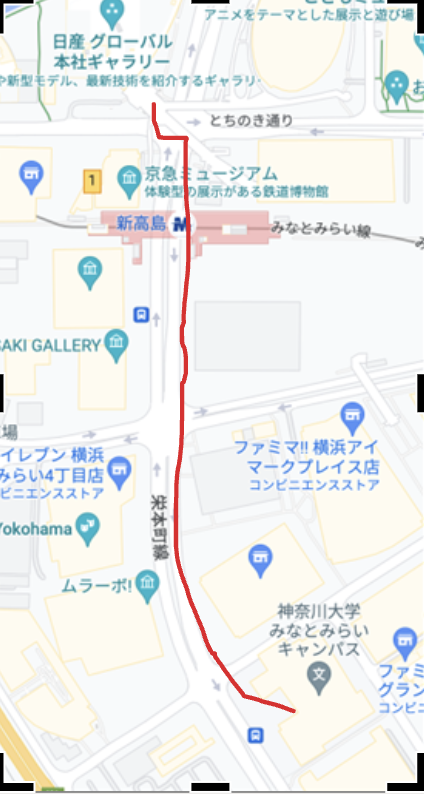
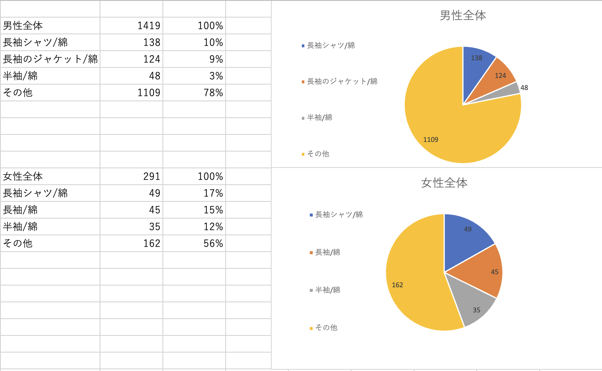

1番上に着用しているトップス調査
理由
当日10月17日は季節の変わり目だからこそ、
違いが出ると考えてトップスについて調査することにした。
注目部分
- 男女における服の傾向の違い
- 横浜駅周辺の流行・トレンド
市場調査の経路
- 出発地点...神奈川大学みなとみらいキャンパス
〒220-8739 神奈川県横浜市西区みなとみらい４丁目５−３
- 経路... 東側の通路から交差点を西、北の順で歩く。
- 終着地点...日産グローバル本社ギャラリー
〒220-8686 神奈川県横浜市西区高島１丁目１−１ 1F 日産自動車グローバル本社
備考
当時は午後だったので、西側はビルの陰になっていた。

着られていた服男女別ランキングTOP3
男性1419人の中でよく着られていた服
|
服 |
人数 |
| 1位 |
長袖のシャツ/綿 |
138 |
| 2位 |
長袖のジャケット/綿 |
124 |
| 3位 |
半袖/綿 |
48 |
女性291人の中でよく着られていた服
|
服 |
人数 |
| 1位 |
長袖のシャツ/綿 |
49 |
| 2位 |
長袖/綿 |
45 |
| 3位 |
半袖/綿 |
35 |
円グラフにすると

女子291人中の例外
- ワンピース多かった。
（アウターとの組み合わせや、インナーとの組み合わせがしやすい）
- カーディガンなど羽織るものを手に持っている人が多かった。
- 丈が短いボトムスを着用している人は比較的トップスが厚着
丈が長いボトムスを着用している人は比較的トップスが薄着
（女性で半袖短パンのような格好の人はいなかった。）
その他目立った例外
- 道が広くランニングに適しているため、ランニング中の人
（通気性・機能性に優れたメッシュ素材の服）もいた。
- 子ども：薄い長袖か半袖
子どもは体温が高い。）
- 警備員/作業員：会社や建設中の建物の近くで観測したため。
制服28人：カーディガンを羽織っている人や持っている人もいた。
(校外学習で訪れている学生)
まとめ
- みなとみらいは、ランニングに適していたり会社が多かったり、
校外学習やライブに訪れる人もいるため、
よりさまざまな服装を観察することができた。
- 服の厚さや素材など、男女差だけでなく世代や訪れている目的
によって異なるという考察をすることができた。
個人的な考察とまとめ
- 火曜日午後2頃で、男性は長袖シャツ138人、長袖ジャケット124人、
と仕事着とも言える服装をしていることと、
また、女性にも長袖シャツの人が49人と多かったことが
特徴的だった。
- 上位3位が綿であったが、見た目で素材を判別しているので、
綿に似せたナイロンなどが混ざっている可能性がある。
- 今回は性別、服の形式、素材に着目したが、
次回似たような調査の時は目にわかりやすく信ぴょう性の高いものに
着目して調査したい。